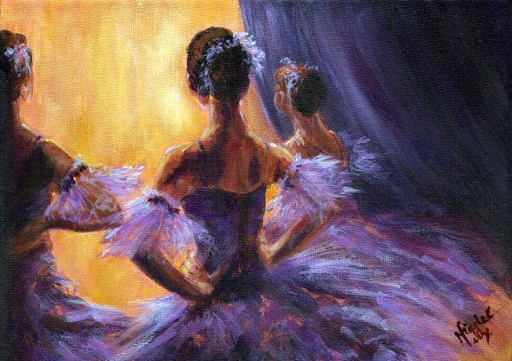

Bem-vindo ao universo da dança!

Um espaço onde a dança ganha vida, os movimentos contam histórias e a arte se transforma em expressão.A história do ballet
O ballet surgiu nas cortes italianas durante o Renascimento e se desenvolveu na França, onde ganhou características que conhecemos até hoje. Ao longo dos séculos, tornou-se uma das formas mais conhecidas de dança clássica, unindo técnica, música, disciplina e expressão artística.
O universo da dança
Além do ballet clássico, existem diversos estilos que exploram diferentes formas de expressão. A dança contemporânea mistura movimentos e emoções; o jazz combina ritmo e energia; e a dança lírica une a técnica à sensibilidade da música. Cada estilo possui sua própria identidade e maneira de contar histórias.
Onde a alma encontra a dança
Mais do que movimentos, a dança é sentimento, dedicação e liberdade. É transformar emoções em arte e encontrar, em cada passo, uma forma única de expressar a própria essência.